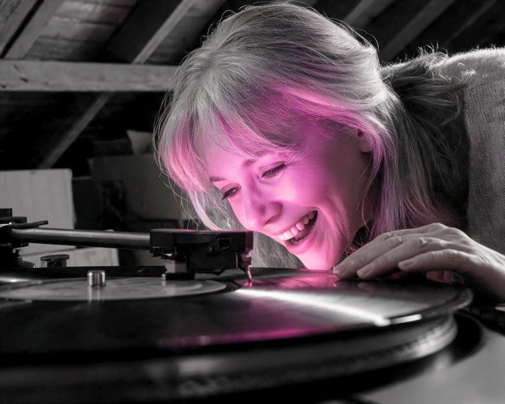

It started with one question.
If the planets reveal who you are, and everything is frequency… then what would be your unique frequencies? Turns out, the work had been done, we just figured out how to insert them into music so you could experience who you are through sound.
